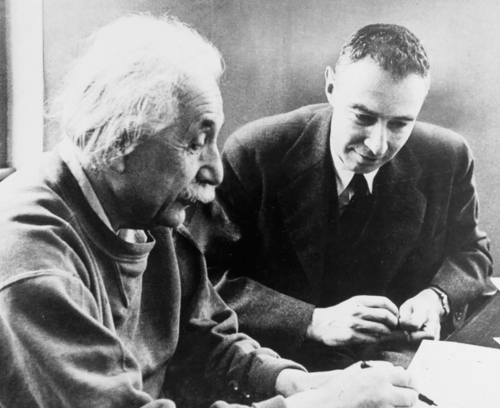

Albert Einstein
The man who changed the world.

Albert Einstein working with J. Robert Oppenheimer and other scientists, engaged in discussion and collaboration.
Here's a timeline of Einstein's life:
- 1879 - Born in Ulm, in the Kingdom of Württemberg in the German Empire.
- 1896 - Leaves high school without a diploma. Enrolls in the Swiss Federal Polytechnic School in Zurich, Switzerland.
- 1900 - Graduates from the Polytechnic with a diploma in teaching mathematics and physics.
- 1902 - Takes a job at the Swiss Patent Office in Bern as a technical assistant.
- 1905 - Publishes four pivotal papers, including the special theory of relativity and E=mc².
- 1909 - Becomes an associate professor at the University of Zurich.
- 1915 - Completes the general theory of relativity.
- 1921 - Receives the Nobel Prize in Physics for the photoelectric effect.
- 1933 - Moves to the United States, joining the Institute for Advanced Study in Princeton.
- 1939 - Warns President Roosevelt about Nazi Germany's potential atomic bomb development.
- 1952 - Declines the offer to become President of Israel.
- 1955 - Dies at the age of 76 in Princeton, New Jersey.
"Einstein's work is one of the greatest events in the history of science." -Richard Feynman
Learn more about Einstein